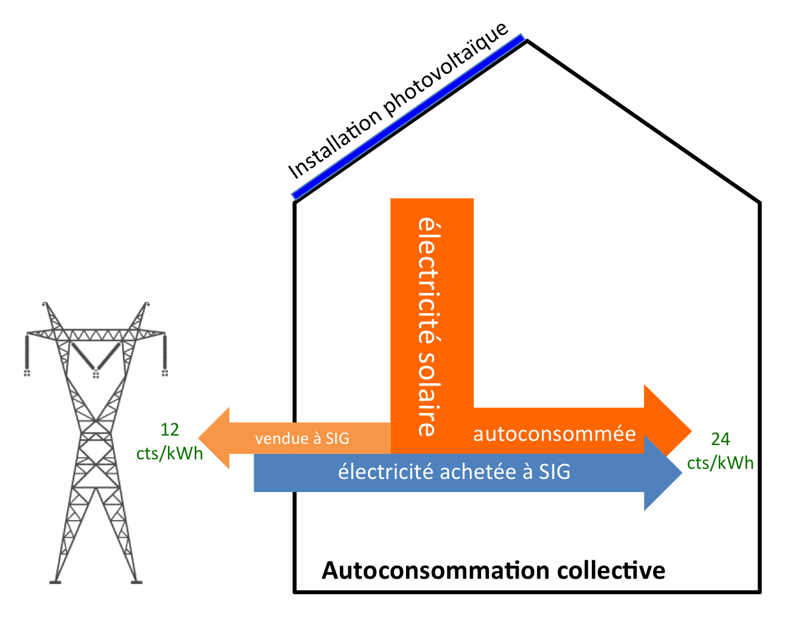

Le modèle
Autoconsommer.
L'autoconsommation collective est le fait de se regrouper au sein d'un bâtiment pour autoconsommer un maximum d'électricité photovoltaïque.
Comment ça fonctionne
Un mix
électrique local.
Dans un contexte actuel où l'électricité photovoltaïque est rachetée à bas prix par les gestionnaires de réseaux électriques suisses, il est cohérent d'essayer d'en autoconsommer instantanément un maximum. Pour ce faire, une communauté d'autoconsommateurs ou un regroupement pour consommation propre est mis en œuvre.
La coopérative Enerko vend aux membres des communautés/regroupements d'autoconsommation d'une part l'énergie photovoltaïque instantanément consommée, mais également l'électricité soutirée du réseau électrique de SIG, au prix de la gamme vitale bleu heures pleines/creuses.
L'autoconsommateur consomme ainsi un mix électrique comportant un quart d'électricité solaire et trois quarts d'électricité hydraulique suisse. Il s'agit d'une électricité de meilleure qualité que la gamme vitale vert de SIG, ceci au prix du vitale bleu.
L'électricité photovoltaïque non autoconsommée instantanément est refoulée sur le réseau électrique et achetée par SIG à un tarif révisé chaque année.

Déjà locataire d'un bâtiment équipé ?
Vous habitez ou gérez déjà un bâtiment équipé par Enerko et souhaitez rejoindre une communauté d'autoconsommateurs, ou vous souhaitez devenir membre de la coopérative ?